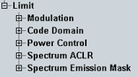

Limit Settings
The limits in the "Multi Evaluation Configuration" dialog define upper limits for the modulation, power and spectrum results including the spectrum emission mask.
For details, see "Limit Settings and Conformance Requirements".

Limit settings
The limits can be configured via the remote commands described in the following sections:
Some examples are listed below.
Remote command: